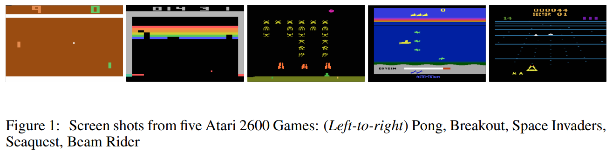
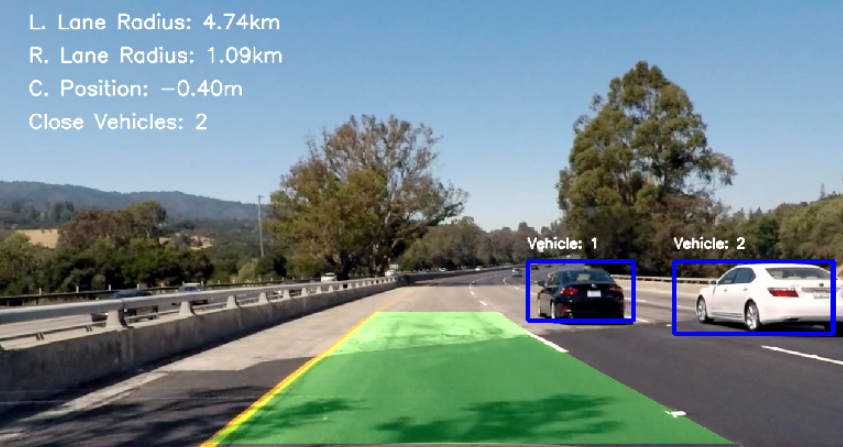
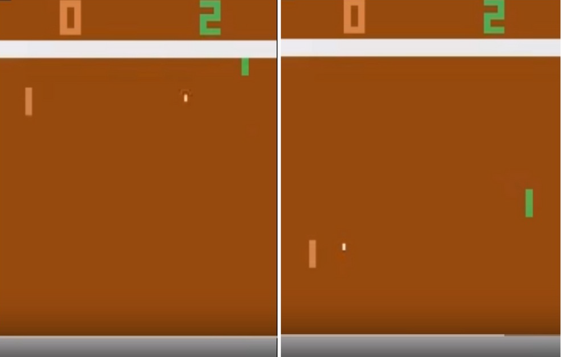

Written by LeeKH
Deep Q-Networks¶
Real-life value iteration¶
Value iteration method나 Q함수를 사용한 value iteration과 같은 방법은 환경에서 관측 가능한 모든 상태에 대한 연산을 필요로 한다. 하지만 실제 환경에서 모든 상태를 고려하기란 불가능에 가깝다. 대표적인 value iteration method의 한계점이다.

강화학습 분야에서 benchmark로 불리는 Atari 2600을 예로 들어보자. 게임의 화면은 210 x 160 픽셀로 구성되어 있는데 각 픽셀당 128비트의 색상 값을 갖는다. 이 경우 상태공간의 크기는 $10^{70802}$로 어마어마하게 거대하다. 그리고 이 거대한 상태공간을 모두 고려할 수 있는 가상의 슈퍼컴퓨터가 존재한다해도 99.9%의 연산량은 대부분 의미없는 (ex. 실제 게임과 관련 없는 화면) 낭비에 불과하다.

Value iteration은 또 다른 문제점이 존재한다. 이는 discrete action space에서만 작동한다는 점이다. $Q(s,a)$든 $V(s)$건 모든 행동이 연관성 없는 이산적인 집합에 속한다고 보는 것인데 이는 연속적인 변수를 행동으로 갖는 continuous control problem(ex. Car Steering Wheel Control)같은 경우에는 적용할 수 없다.
우선은 적당한 크기의 예제로 Q-Learning을 살펴보도록 한다
Tabular Q-learning¶
모든 상태공간을 고려해서 행동하는것이 과연 필수적인가? 라는 의문에서 Q-learning이 시작된다. 예를 들어 바둑을 두는 환경을 가정하였을때 agent가 프로 바둑 기사라면 과연 그는 모든 상태공간을 생각하고 다음 수를 계산하는가? 그렇지 않다. 몇 수 앞을 생각하고 계산하는 등 현재 상태와 연관된 일부 상태공간만 체크하는 것이 전부다
주어진 환경에서 얻을 수 있는 상태들을 최대한 사용해서 학습을 진행하는 value iteration 방법을 Q-learning이라고 부른다. 앞서 언급한대로 우선은 셀 수 있을 정도의 적당한 공간에서의 Q-learning 절차를 알아보자
- 모든 상태에 대한 행동의 가치를 기록할 테이블을 0으로 초기화 한다
- 환경(environment)과 상호작용하며 (현재 상태, 행동, 보상, 다음 상태)의 튜플인 ($s, a, r, s’$)을 얻는다. 문제는 여기서 특정 행동을 결정해야하는데 이를 위한 적절한 방식이 존재하는 것은 아니다. 우선은 가치가 높은 방향으로 행동하겠지만 그것이 완벽한 정답일 확신은 없다. 다른 방법이 존재할 가능성이 있기 때문이다. 이러한 문제를 ***exploration versus exploitation***이라고 한다
- Q-learning은 이름 그대로 Q함수를 업데이트해가는 학습방법이다. Bellman approximation을 사용해 $Q(s,a)$를 업데이트한다. 수식은 아래를 참조
- Step 2를 반복한다. Q함수가 어느정도 수렴할 경우 학습을 종료한다
$$ Q(s,a) \leftarrow r + \gamma \max_{a’ \in A}Q(s’,a’) $$
Step 3에서 Q-learning은 위의 수식을 사용한다고 가정하였다. 하지만 환경에서 얻는 샘플들로 학습을 진행하는 과정에서 위 식처럼 바로 새로운 값을 적용하는 것은 이전 학습과정이 손실되는것과 다를바 없으므로 좋지않다. “Blending”이라는 기법으로 0과 1사이의 $\alpha$값을 사용하여 이전 Q값과 새로운 Q값을 모두 반영하게 하는 방법이 일반적이다. 수식으로 표현하면 다음과 같다 $$ Q(s,a) \leftarrow (1-\alpha)Q(s,a) + \alpha(r + \gamma \max_{a’ \in A}Q(s’,a’)) $$ Q-learning 절차를 다시한번 정리하면 아래와 같다
- initialize all $Q(s,a)$ table to zero
- Obtain ($s, a, r, s’$) from the environment
- Update this, $Q(s,a) \leftarrow (1-\alpha)Q(s,a) + \alpha(r + \gamma \max_{a’ \in A}Q(s’,a’))$
- Repeat from step 2 until the table converge
Deep Q-learning¶
앞서 살펴본 Q-learning을 통해서 모든 상태공간을 살펴봐야하는 value iteration 방법의 한계를 어느정도 극복하였다. 하지만 상태 공간이 큰 문제들에 대해 관측해야하는 양이 많아지는 한계는 여전했다

위의 아타리 게임에서의 예시를 살펴보자. 왼쪽 상황에서 agent(초록색)는 자신에게 날아오는 공을 받아치기 위해 분주히 움직여야 한다. 반면 오른쪽 상황처럼 아직 상대방(주황색)이 공을 치기 전까지 agent가 특별히 취할 행동은 없다. 크게 2가지의 상황으로 나뉘는 위 상태는 사실 전체 상태 공간 $10^{70802}$개 중 2개에 불과하지만 각 agent가 취해야 할 행동 범위는 다르다
이러한 한계를 극복하기 위해 상태와 행동에 대한 가치값을 비선형적으로 표현하려한다. 이를 machine learning 분야에서는 regression problem으로 분류한다. 비선형적으로 표현하는 방법은 많이 있지만 최근 많이 사용되는 deep neural network를 사용하려한다. 예를 들어 위 그림과 같은 게임의 화면을 관측(입력)으로 한다고 하자. 이를 바탕으로 Q-learning 알고리즘을 조금 수정하면 아래의 알고리즘이 완성된다
- Q-table대신 Q(s,a)에 해당하는 deep neural network를 만들고 가중치를 초기화한다
- Environment와 상호작용하며 ($s. a. r, s’$)의 튜플을 얻는다
- Deep Q-table의 학습을 위한 Loss 값을 계산한다.
- 경사하강법 알고리즘(ex. Stochastic Gradient Descent optimization algorithm)을 사용하여 DQ-table가 loss를 최소화하는 방향으로 모델의 parameter들을 수정한다
- Step 2를 모델이 수렴할 때 까지 사용한다
Loss값 계산을 위한 수식은 아래와 같다. 만약 episode가 끝난 경우 즉각적 보상 값인 $r$만 사용한다 $$ Loss = (Q(s,a) - r)^2 $$ 만약 episode가 끝나지 않은 경우에는, $$ Loss = (Q(s,a) - (r+ \gamma \max_{a’ \in A}Q(s’,a’))^2 $$ 위 수식과 같이 즉각적인 보상값과 감소율이 적용된 장기적 보상값의 합을 정답 데이터로 사용한다. 즉 Loss라는 것은 Q-learning과정에서 얻어지는 기대값과 예측값의 차이를 계속해서 보정해 나가기 위해 존재한다.
Interaction with the environment¶
Q-table을 DQ-table로 바꿔서 일부 문제를 해결하였지만 위 방법에는 여전히 몇가지 문제점이 있다. 예를 들어 Frozen Lake같은 간단한 예시에서는 exploration을 위해 random하게 움직이는 전략을 사용하고 그것이 유효했지만 이처럼 무작위로 움직이는 전략은 그다지 효과가 좋지 못하다는 점이다. 위 그림에서 나타난 game of Pong의 경우를 생각해보면 단순히 무작위로 움직여 상대방을 이길 확률이 얼마나 될까?
Epsilon-Greedy method¶
그래서 생각한 방법은 NN으로 근사시킨 Q-function의 값을 사용하는 것이다. 충분히 잘 학습된 Q-function은 random하게 움직이는것 보다 더 효율적인 행동 방향을 제시해 줄 것이다. 하지만 Q-function의 값이 좋지 않다면 어떻게 되는가? Agent는 엉뚱한 행동만 하는 불상사가 생길 수도 있다. 그래서 학습 초기 단계에는 어느 정도 random하게 (uniformly distributed) 움직이며 학습을 하는 전략을 생각해 볼 수 있다
이처럼 2가지 행동을 적절히 섞은 방법을 epsilon greedy 방법이라고 한다. Q-function을 사용하여 탐색할 것인지 random하게 행동할지 결정하기위해 미리 정의한 확률 상수값 $\epsilon \in [0,1]$을 사용한다.
처음에는 $\epsilon$ 값을 1로 설정하여 100% random action을 취하도록 하다가 점점 그 값을 낮춰 random action 확률을 2%, 5%등으로 낮춘다(Epsilon based randomly action choice >> Greedy action choice based on Q-function).
Replay Buffer¶
여전히 일부 상황에서 몇가지 문제들이 남아있다. 우리는 DQ-learning을 위해 SGD optimization을 시행하기로 하였으나 해당 알고리즘의 제약사항이 Q-learning 알고리즘의 일부에 적용된다

SGD 알고리즘을 적용하려면 학습데이터는 모두 독립적이어야 하고 균등하게 분포해 있어야한다는 제약사항이 있다. 위 그림에서도 알 수 있지만 수렴 지점 탐색을 위해 해당 공간에서 확률적인 탐색을 수행하기 때문에 도중에 공간이 바뀌어 버리는 경우 알고리즘은 무용지물이다
반면 Q-learning의 경우 $(s,a,r,s’)$값을 environment에서 받아 곧바로 update하기 때문에 Q-function의 정책 공간이 독립적 공간에 존재하지 않고 매번 달라진다고 볼 수 있다. 그리고 greedy-epsilon 방법을 사용하기 때문에 random한 행동에 대한 정책을 학습해버릴 수 있으므로 매 step마다 update하며 optimal policy를 찾는다는 것은 불가능에 가깝다.
이를 해결하기 위해 거대한 buffer에 과거의 experience 기록을 저장해 놓은 다음에 일정 부분만큼 sampling하여 학습에 사용하는 전략이 바로 Replay Buffer다. 일정 크기의 버퍼를 지정한 다음 새로운 기록이 추가되면 이전에 학습된 샘플들을 삭제한다. 즉 한 step마다 update하는 것이 아니라 일정 버퍼 크기 만큼의 step을 모았다가 한번에 학습하는 방식을 사용함으로서 optimization 알고리즘이 잘 작동하도록 하는 것이다
References¶
- Deep Reinforcement Learning Hands-On, Maxim Lapan, 2018
- Playing Atari with Deep Reinforcement Learning by V. Mnih and others, published in 2013
- Self Driving Car imgs - https://medium.com/@ricardo.zuccolo/
- TIC-TAC-TOE imgs - http://tim.hibal.org/blog/alpha-zero-how-and-why-it-works/